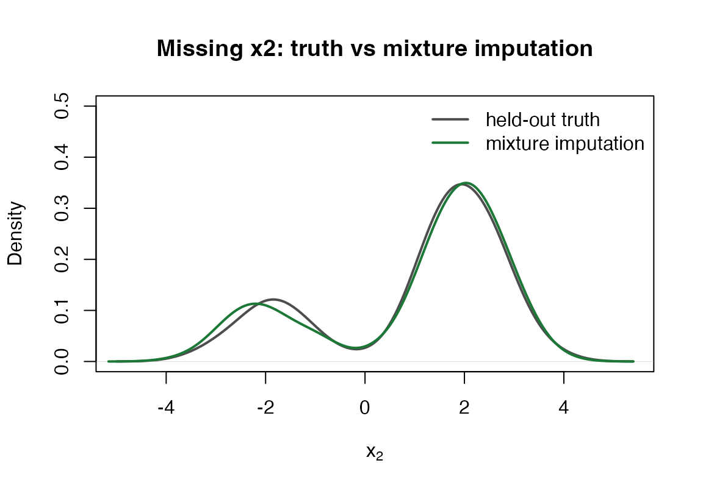
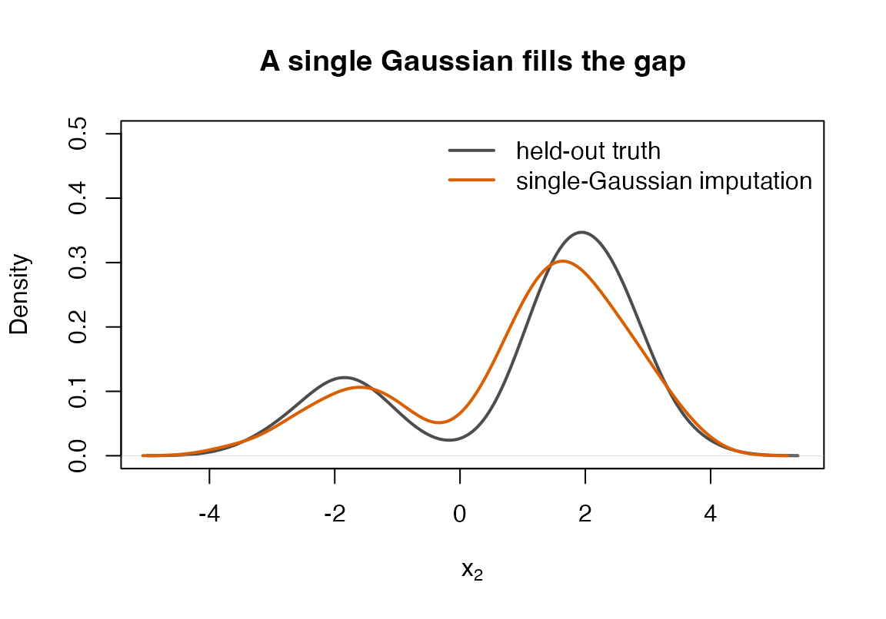

Imputation is conditioning
When a value is missing, what we know about it is its conditional
distribution given everything we did observe. If the joint distribution
of the data is a Gaussian mixture, that conditional is itself a Gaussian
mixture, available in closed form by the Schur-complement algebra of
gmm_conditionalise(). gmm_impute() fits a
mixture to a dataset that contains holes and draws completed datasets
from these per-row conditionals.
A mixture can be multimodal and heteroscedastic. That is the point: it represents shapes a single-Gaussian model (the multivariate-normal assumption) and a linear-Gaussian conditional (a normal regression imputation) cannot, so the imputations – and the inference pooled from them – stay faithful to data those models mis-specify.
A two-cluster example
Two groups, each a tight cloud, with a positive within-group
association between x1 and x2. Roughly forty
per cent of x2 is then made missing at random, with the
chance of being missing depending on the observed x1.
n <- 600
lab <- sample(c(-1, 1), n, replace = TRUE)
x1 <- 2 * lab + rnorm(n, 0, 0.6)
x2 <- 2 * lab + 0.5 * (x1 - 2 * lab) + rnorm(n, 0, 0.6)
truth <- cbind(x1 = x1, x2 = x2)
X <- truth
missing <- runif(n) < plogis(0.6 * x1) # missing at random, depends on x1
X[missing, "x2"] <- NA
round(mean(missing), 2)
#> [1] 0.53The marginal distribution of x2 is bimodal: one cluster
near
,
one near
,
with little mass between them.
Impute, then look at the shape
imp <- gmm_impute(X, N = 2L, m = 20L, seed = 1L)
imp
#> <gmm_imputation>: m = 20 completions, K = 2 components, p = 2
#> mechanism : missing at random
#> missing : x1 0%, x2 53%A single completed dataset has no holes:
done <- gmm_complete(imp, 1L)
anyNA(done)
#> [1] FALSEDo the imputed values follow the two clusters, or do they pile up in
the empty middle? Overlaying the imputed x2 on the values
that were actually missing shows the mixture imputer reproducing both
modes.
imputed <- done[missing, "x2"]
hidden <- truth[missing, "x2"]
plot(density(hidden), lwd = 2, col = "grey30",
main = "Missing x2: truth vs mixture imputation",
xlab = expression(x[2]), ylim = c(0, 0.5))
lines(density(imputed), lwd = 2, col = "#1b7837")
legend("topright", c("held-out truth", "mixture imputation"),
col = c("grey30", "#1b7837"), lwd = 2, bty = "n")
A single Gaussian fitted to the same holes has one centre and one
spread, so it fills the empty middle and erases the two clusters.
Forcing one component (N = 1L) shows the contrast:
imp1 <- gmm_impute(X, N = 1L, m = 20L, seed = 1L)
imputed1 <- gmm_complete(imp1, 1L)[missing, "x2"]
plot(density(hidden), lwd = 2, col = "grey30",
main = "A single Gaussian fills the gap",
xlab = expression(x[2]), ylim = c(0, 0.5))
lines(density(imputed1), lwd = 2, col = "#d95f02")
legend("topright", c("held-out truth", "single-Gaussian imputation"),
col = c("grey30", "#d95f02"), lwd = 2, bty = "n")
Pooling an estimand
A column mean is pooled in closed form – the exact large-sample limit of the between-imputation variance, so there is no Monte-Carlo noise in the pooling step – reporting the estimate, a standard error, a confidence interval, and the fraction of missing information.
proxy_pool(imp, "x2")
#> term estimate std.error statistic df conf.low conf.high fmi
#> 1 x2 0.04314127 0.09129778 0.4725336 5561.483 -0.135838 0.2221206 0.09745177
proxy_fmi(imp, "x2")
#> x2
#> 0.09745177For a regression or any other model, the established place to combine
an estimand across imputations is mice.
as_mids() packages the completions as a mice
object, so the joint mixture imputations flow into
mice::pool() unchanged – proxymix supplies the imputation
model, mice the pooling.
library(mice)
#>
#> Attaching package: 'mice'
#> The following object is masked from 'package:stats':
#>
#> filter
#> The following objects are masked from 'package:base':
#>
#> cbind, rbind
fit <- with(as_mids(imp), lm(x2 ~ x1))
summary(pool(fit))
#> term estimate std.error statistic df p.value
#> 1 (Intercept) -0.03669985 0.03897720 -0.9415722 67.96957 3.497462e-01
#> 2 x1 0.94152713 0.01920706 49.0198404 57.09474 2.346299e-48Scope
This vignette covers numeric data that is missing at random: the
probability that an entry is missing may depend on the observed entries
but not on the missing value itself. Value-dependent missingness
(mnar()) and censoring at a known bound
(censored()) are supported through the
mechanism argument and are the subject of the companion
vignette Imputation when the mechanism depends on the value
(vignette("missing_data_mnar")). The number of mixture
components is chosen by the Bayesian information criterion when
N is left at its default, and a supplied seed
makes the result reproducible without disturbing the ambient
random-number state.